Becoming a Great Competitor¶
By Allen Fox, Ph.D.¶
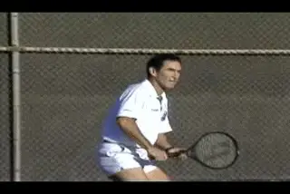
Surprisingly few people are great natural competitors, but the average person can learn their techniques.
Surprisingly few people are in this world are great competitors. A study done of fighter pilots in World War II found that less than 5% of all the Allied fighter pilots shot down virtually all the enemy planes. The other 95% of our pilots were the ones who were getting shot down by the top 5% of the enemy pilots.
In war and in business, in tennis and in other areas, few people are able to be really successful. Even fighter pilots. But the good news is that the most successful competitors use certain techniques that can be learned by the average person. In this article we'll look at some of those techniques for tennis.
Now I must warn you at the beginning that it's not easy. More people are willing to work on their backhands and their forehands then are willing to work on their minds and their emotional control. But I can guarantee that if you are really willing, if you can do the work that it takes, you will improve.
Only 5% of fighter pilots are actually successful in shooting down enemy planes.
Components in the Mental Game
Let's start by understanding the three basic components in the development of the mental game. One is Direction. Two is Drive. And three is Control. Just one or two components by themselves won't help. You need all three working together to become a better competitor.
When it comes to Direction, you have to know where you're going. If you define where you're trying to end up, then you've got a much better chance of getting there. If you're going to get in a car and take a trip, you wouldn't just take off not knowing where you're going, would you? That may seem simple. But in tennis, people do this all the time.
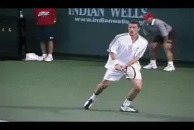
Getting angry will take you in exactly the opposite direction of your goal.
Component 1: Direction or Goal
Once you know specifically where you're going, you can apply Rule Number One: "Never do anything that doesn't take you towards your goal." In a tennis match, obviously, this goal is winning. But over the years I have been amazed to see so many talented players ignore Rule Number One and engage in behaviors that took them in the exact opposite direction of their goal.
The one behavior that is most likely to take you in the opposite direction from this goal is getting angry. Does getting angry help you win matches? The answer is definitely not.
You may say, "What about John McEnroe? He got really mad. He won a lot of matches." It may have worked for John McEnroe, but I have yet to see another person that it has worked for in the same way. It didn't work for me, and it never worked for anybody that played on my college tennis teams, or for players I had in my tennis camps. It deson't work for example for Marat Safin who usually plays much worse when he gets angry. It's the same for all the other top players. So don't do it. It goes directly against Rule Number One.

Video demonstration — the original video for this article was hosted on TennisPlayer.net. Click Photo to learn about the importance of individual points.
But just following Rule Number One is not enough. To be a great competitor you never do anything that takes you away from your goal. But what are the positive steps that you need to take in that direction? To do this you need a more specific plan. You need to know how to get there. It' similar to having a road map for that car trip we were talking about.
Before you walk out on the court to play a match, a tournament match, you need a game plan. This is a specific set of tactics and strategies that take into account your strengths, your weaknesses, and your opponent's strengths and weaknesses. A game plan gives you a specific order of play so that you know exactly what you're going to do when you get out there. I've outlined how to do this in some of my other articles on Tennisplayer. (link.)
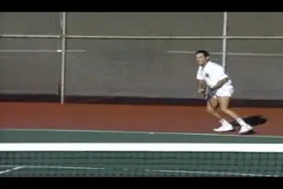
\ Before you walk on the court have a game plan of how you plan to win your points.Component 2 Drive
But even if you know where you are going and how you plan to get there, again you need more. The second component you need in becoming a better competitor is drive. Like a car, again, you need a strong engine. That car is not going to get anywhere, even if you know where you want to go unless the engine's strong.
And in a tennis match, this means determination. You need optimism. You need the strength to last and keep your drive up for two, three, four hours, as long as it may take to reach your goals. But 95% of all competitors become disenchanted somewhere along the line. They weaken. They can't keep their drive level up long enough.
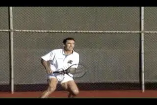
You need to keep your drive and determination for as long as it takes to reach your goals.
If you want to reach the top 5%, you have to be able to maintain drive as long as it takes to finish and accomplish what you need. And this means being able to deal emotionally with the normal ups and downs in a match as well as the unexpected circumstances that can arise.
Component 3: Control
Which brings us to component number thre: Control. And here control is emotional control. In a tennis match, most points are simply a reaction. You can't control what happens once the point starts. It's an automatic sequence of habits that you've developed over years of practice. It happens very, very quickly and your mind and intellect aren't quick enough to keep up with what's going on during the actual points. The only thing you can do is to set the emotional stage.
There are a lot of points in a tennis match and you're going to win about half of them and lose about half of them in a close match. It can become an emotional roller coaster. If you get too excited when you win a point, depressed when you lose a point, excited when you win a point, it's very, very tiring. And if you do that all match, you're going to lose the strength to continue on for the two, three, four hours that it may take to win.
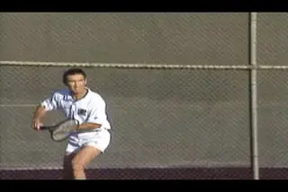
Once the point starts your reactions take over.
Because of this, you don't want any point to be too important. If you react strongly every time you win a point, you're making more out of the point than should be there. Each point should have some importance. It's important, but not that important.
You don't want to acknowledge the fact that any one particular point is especially important. If you do, you're setting yourself up to get nervous and choke. There'll always be another point and you have to realize that. You have to take the positive and the negative with equal equanimity. If you watch the top players they may react emotionally and pump themselves up after winning a big point. This is a reflection of true confidence, as we'll discuss below. But the top players tend to stay off the emotional roller coaster. in general they go through their matches keeping an even emotional keel.
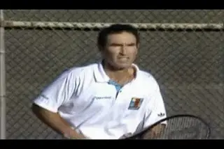
Your emotions are the only thing you can control.
Before the point starts, you can have yourself feeling properly and then that's the best chance you can get that your emotional reactions and your physical reactions when the point starts will be proper. Control only what's possible, and in this case, it's your emotions.
The question then arises as to what causes the 95% to react so poorly. To choke, to tank, to get angry, to make bad tactical decisions, etc. And the answer is hidden fear. You rarely if ever hear players or coaches talk about the role of hidden fear in the mental game, but for most players it's a critical factor, and dealing with it is critical to competitive success. (What is it? link to read my article on Hidden Fear.)
All competition involves a conflict, a conflict of desire to win versus the fear of failure. Everybody would like to win all the time --they would like to win in tennis and hockey and soccer and in business and in school and in everything --they would like to be the best. But, unfortunately, that's not always possible.

Before the point starts learn to set the emotional stage.
A lot of us have had experience with failure and what everybody finds out is that the harder you try and the more energy and effort you put into trying to succeed, the more painful it is when you fail.
Failing is a part of trying and it's a part of every enterprise. And what most people are unable to accept are the painful consequences of losing. And because they are unwilling to accept the consequences, this causes them to behave in maladaptive ways.
Fear of losing actually causes them to engage in behaviors that virtually guarantee that they will lose. I analogize it to somebody who's afraid of dying and they're so afraid of dying that rather than face their fear, they commit suicide. Now that's a very maladaptive response to the problem.
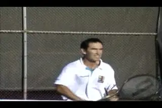
Once the points starts, it's a matter of reaction.
But in tennis, you see the same kind of maladaptation. For instance, you see somebody who's losing a match, and their response to that is to tank---to quit. Now, to me, that's a very poor reaction, but the reason they do it is because they don't want to accept the pain of fighting it all the way out and being disappointing and losing. So they accept failure early and they don't try so hard, and then by the end of the match they don't feel as bad when they lose.
So how do we control hidden fear? We do it by learning to set the proper emotional stage before every point. And how do we set the proper emotional stage? First we have to realize that once the point starts, there's nothing more you can do. It's strictly reaction at that stage. And so, as psychologist Jim Loehr was among the first to point out, you can only control the time between points. Once the point ends, your work as a controller of your own emotions begins.
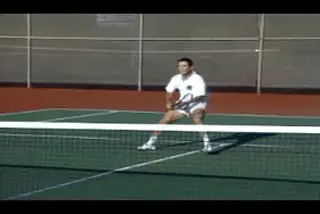
Your goal is to have no emotional reaction no matter how the point ends.
Like Loehr, I believe there is a sequence of four things that should be done between points to set up your optimum emotional state. But I have a little different take on what exactly these stages should be. (link to see Jim's articles.) What I am going to suggest is a strategy of emotional control.
Now you may ask, "Wouldn't it help me if I got excited when I played well? I see Roger Federer raising his fist in the air and going "yeah" when he makes a great shot. Wouldn't that help me?" And I would say this: you and I and most of us are not Roger Federer. Roger Federer is a champion and he doesn't have the type of fear and uncertainty that we have.
When you are feeling confident, it's not a problem if you have a positive reaction after a point on some occasions. This is what you see with most of the top players. But problems we face in matches don't usually arise when you are highly confident. So what I am going to suggest is a strategy for dealing with what happens in those matches, not instances when you are confident that you will prevail.
Most players in most matches will be dealing with fear and uncertainty. The correct strategy in the face of fear and uncertainty is not to emote and try to pump yourself up. That has the potential to bring hidden fear to the surface. When you're dealing with a situation where you don't have fear and uncertainty, you don't have to worry. Your reactions will be right. But for the ordinary person when there is that hidden fear, you need control. And once you let your emotions be uncontrolled, you're in the grip of this hidden fear. The genie gets out of the bottle. So you can't afford to get excited -- win or lose the point.
The first step in learning to control your emotions is learning not to react after the point ends. Your goal is to learn how to literally feel nothing the instant the point ends--that is to have no emotional reaction to what just happened. At that very second, you don't feel happy, you don't feel sad, you don't feel positive or negative -- you don't feel anything new or different about the outcome of that point. Your drive and determination are just the same.
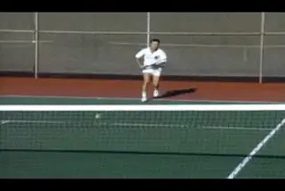
When you have no reaction to an easy miss, you have developed emotional control.
You want to reach the stage where you can have a sitter at the net, miss it, completely blow it on a big point, and have no emotional reaction whatsoever. You want to feel the same if you miss that easy shot as you would if you made a great shot. Once you can do that, you've reached the stage where you have control of your emotions and they don't have control. Immediately after the point ends, get rid of it! Nothing happened at all!
Stage number two is to relax. The point is over. You walk, do the little things that you need to do between points like pick up the ball, walk yourself into position. At this stage, you keep your head down. You focus on something that's unemotional like your racket strings or your shoes and you spend the time rejuvenating and making yourself feel better and getting back to an equilibrium state.
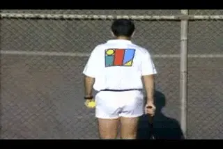
Relax by doing the little things you need to do between points.
Stage three is to psych up. At this point, you've reached the ready position. You're either ready to serve or you're ready to return serve. What you want to do is get yourself feeling good, feeling powerful, feeling strong, feeling optimistic.
And how do you do this? Through imagery. You remember the times when you felt good, when you were playing well, when things were going your way. And you practice this kind of imagery and surprisingly enough, you'll get very, very quick at getting into this state.
Immediately before play starts, you'll be in the fourth stage of preparation and that's the stage of focusing. Now you want to have an exact plan of what you're going to do. If you're going to be serving, you want to have your plan of whether you're going to serve and volley and where you're going to hit your serve, and then all of your concentration goes into those little keys that help you the most in that particular stroke.
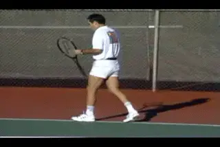
Use imagery to psych up for the next point.
Those keys are going to be an individual thing. For me when I was serving, I wanted to have a loose wrist and I wanted a picture of reaching up high and hitting over the ball.
On serve return, for me, it was to watch the ball and to transfer my weight. I'd watch my opponent bounce it, I'd watch him throw it up, and I'd watch it come off the court and then I'd visualize driving forward and meeting that serve return.
These were my keys and you'll need to figure out exactly what keys work for you. For you, it may be something different. But in each case, it should be something simple and helpful. The important thing to remember is don't change your keys and change your sequences based on what happens on the court, just because you lose the point. Stick to what you're doing, stick to your keys, and that's the best you can do.
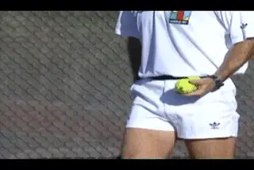
My keys on my serve were to keep a loose wrist and to hit up and over the ball.
[ [Again, to review the 4 Stages are:\ \ Stage One -- Feel nothing, don't react, no matter how the point has ended.\ Stage Two -- relax as you prepare for the next point.\ Stage Three -- psych up using imagery of your best tennis.\ Stage Four -- focus on your game plan and your personal keys.]]
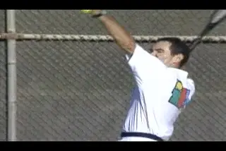
Master these techniques and your on your way to becoming a great competitor.These four stages are the sequence for the whole match. It doesn't guarantee you're going to win the match, but it gives you absolutely the best chance you're going to have. If you want to become a great competitor, if you want to get out of the 95%, develop the discipline to practice these techniques and maintain this type of control for an entire match.
You'll have a tremendous advantage over the average person who just let's themselves be beaten. If you do, there is a good chance you can move up much closer toward that 5% of all tennis players who are the great competitors.
This article is excerpted from Allen's new book, Tennis: Winning the Mental Match, which will be available at the end of 2010 on Amazon and on Allen's new website, www.allenfoxtennis.net.
Read More From Allen!
Visit him at www.allenfoxtennis.net

Winning the Mental Match Dr. Allen Fox
Tennis is mentally the most difficult sport due to it's personal nature which makes winning and losing feel more
important than they are. In this new book, Allen offers his proven solutions to problems such as choking, reducing
stress, finishing matches, and developing confidence. Based on a life time of high level play and coaching success,
it's a must for all competitive players.
[ to
Order](http://www.amazon.com/Tennis-Winning-Mental-Allen-Fox/dp/0615407765/ref=sr_1_1?ie=UTF8&qid=1336083459&sr=8-1).

Winning may not be everything, but Dr. Allen Fox points out
eminently preferable to losing. In his new book, The
Winner's Mind, Allen lays out an original step-by-step
plan for succeeding at any of life's endeavors, based on
his first hand and very personal observations of the
careers of both world-class tennis players and successful
businessman. The bottom line is that even if you are not a
born champion--and only a tiny percentage of us are--you
can still use the success strategies of champions to tilt
the odds in your favor. Writing with brutal honesty and dry
humor, Fox lays out the common mental characteristics of
winners in sports and in life. He explains the critical
role of intellect over emotion. He analyzes the struggle
between ambition and fear and the insidious and pervasive
fear of failure that undermines so many of us. He then
outline how to confront and overcome these fears in your
life and career, even when they are initially subconscious.
Must reading from one of the great thinkers in tennis, and
a Renaissance Man in life. [ to
Order](http://www.tennis-warehouse.com/descpage-MIND.html).
To purchase this book you can also send a check for $17.95
to Allen Fox, 1120 Inverness Place, San Luis Obispo, CA.
- The price includes shipping.

Allen Fox PhD is a former world class player, a coach,
insightful analysts in modern tennis. A top 10
American player from the glory days before Open
tennis, Fox played many of the legendary greats, among
them Roy Emerson, Rod Laver, Stan Smith, and Arthur
Ashe. At Pepperdine he developed the men's tennis
program into an elite contender for national titles,
and gave Brad Gilbert the insights that became the
foundation for "Winning Ugly". His book Think to Win
is a modern classic. He has also starred in a series
of acclaimed videos, including Pro Secrets of Match
Play and Allen Fox's Ultimate Tennis Lesson.